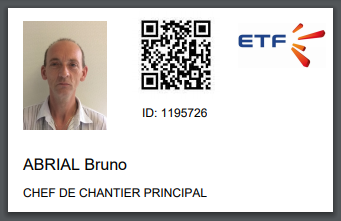

Vbadge¶
Préambule¶
Vbadge est une carte distribuée aux collaborateurs permettant grâce à un QR Code imprimé dessus de récupérer ses habilitations / autorisations.
Les habilitations / autorisations sont reliées directement à Visual Planning.

Qui peut avoir une carte ?¶
Seul les personnes importés par KHEOPS peuvent avoir une carte.
- C’est à dire :
- CDI
- CDD
- CDIC
Warning
Les Intérimaires et Stagiaires sont les seuls ressources qui ne peuvent pas obtenir de carte.
Vous ne pouvez pas demander une carte pour une personne créée manuellement dans Visual Planning.
Comment reconnaitre une ressource créée manuellement ?¶
Une personne créée manuellement à un ID VINCI commençant par U pour Utilisateur, ainsi que le code du secteur de la ressource et un compteur.
Exemple : U + SSSS + . + COMPTEUR = U4302.2293
Vous pouvez le vérifier à plusieurs endroits dans l’affichage ou dans les éditeurs de saisies : AFFECTATION PERSONNEL + PERSONNEL
Note
Pour toute personne créée manuellement et qui est en doublon parce qu’elle a été importée de KHEOPS, vous devez effectuer un Rapprochement
Demander une carte pour un collaborateur¶
- Pour demander une carte vbadge, il faut commencer par vérifier les points suivants concernant le collaborateur :
- Photo
- Nom - Prénom
- Qualification de bulletin
Ces informations doivent être corrigées avant la demande car elles sont inscrite sur la carte qui sera donnée aux collaborateurs.
Après avoir vérifier les données, vous pouvez faire le demande à …. par mail qui vous envera la carte.
Rapprochement¶
Warning
Seul les référent peuvent effectuer un rapprochement, rapprochez vous de vôtre référent ou contactez le service informatique.
Dans certains cas, vous avez besoin de planifier la personne avant qu’elle ne soit créée dans KHEOPS.
Pour la plannifier, vous allez la créer manuellement dans Visual Planning mais cela vous bloquera pour faire une demande de carte vbadge.
Lorsque celle-ci sera importé depuis KHEOPS, vous pourrez les Rapprocher pour fusionner les deux personnes.
Note
Lors d’un Rapprochement Tous les événements de la personne créée manuellement sont reporter sur la personne importée de KHEOPS.
Pour se faire, rendez-vous dans l’onglet affichage et selectionnez l’affichage : _Gestion des imports Kheops
L’affichage¶
- Il est découpé en 3 vues :
- Personnes créées manuellement
- Positionnement du rapprochement
- Personnes importées par KHEOPS
- Il faut essayer de vider la vue
Personnes créées manuellementen effectuant ces actions : - Faire un rapprochement entre la personne créée manuellement et la personne importés de KHEOPS
- Marquer la ressource comme générique
- Spécifier que la personne est un intérimaire
Placer un rapprochement¶
Prennez la personne créée manuellement dans la vue à gauche et placer la sur le planning. Peut importe la date
Une page s’ouvre dans laquelle vous devez renseigner l’ID VINCI de la même personne importée de KHEOPS.
Note
Vous retrouvez l’ID VINCI de la personne dans la vue de droite
Quelques minutes plus tard l’événement aura disparu ainsi que la personne créée manuellement.
Ressource générique¶
Lorsque vous ouvrez les informations de la personne : Double cliquez sur la personne
Vous trouverez dans la fiche de la personne une case à cocher pour la marquer en générique.
Note
Une ressource générique est une ressource non nominative comme : Intérimaire, Poseur de voies, …
Intérimaire¶
Lorsque vous ouvrez les informations de la personne : Double cliquez sur la personne
Vous trouverez dans la fiche de la personne une liste déroulante de type de contrat : Sélectionnez le type Intérimaire